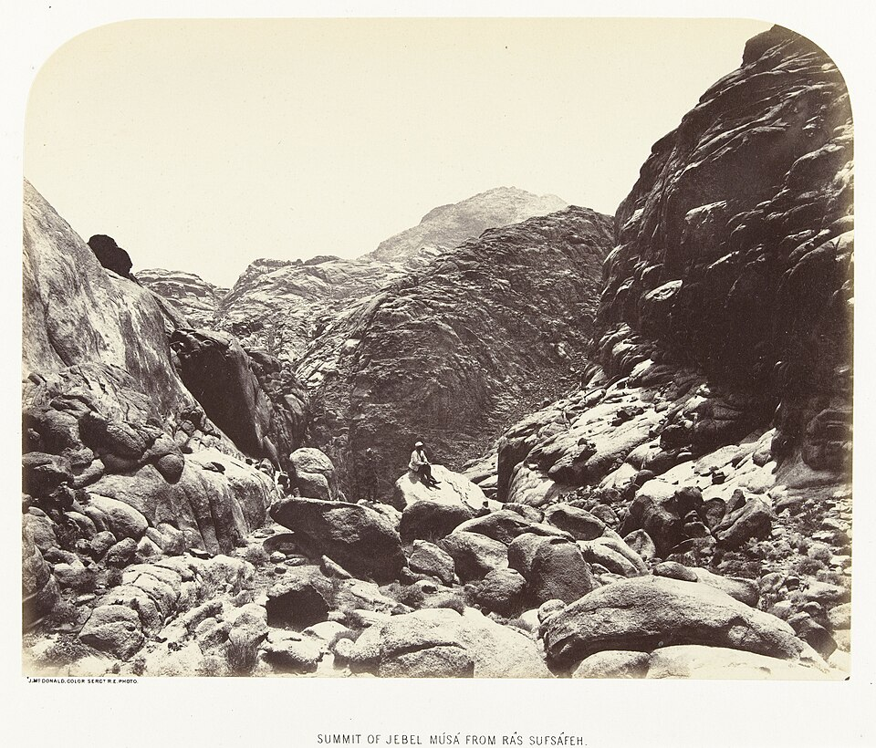

God does not change. People do. The Bible is the record of how near they came.
Some people in Scripture were God’s enemies. Some were strangers, some were slaves, some were children, and a few were called his friends. Same God every time. What changed was where they stood.
This page walks those six distances: what each looks like, how God treated people at each one, what time has to do with it, and how to tell where you are standing now.
One house, three distances. The father holds the son who left. The son who stayed stands a few feet away, farther off than anyone. Rembrandt, The Return of the Prodigal Son, c. 1668.
01 · What does not move
An unchanging God who keeps coming.
“God does not change” is about his heart and his word. It never meant he sits still.
The plainest statement of it is in Malachi, and the same breath that says it says something that sounds like the opposite. “I the LORD do not change,” he says, and that is the reason Israel has not been wiped out (Malachi 3:6). Then, one verse later: “Return to me, and I will return to you” (Malachi 3:7).
So the God who does not change is also the God who will “return.” That is not a contradiction. It is the whole shape of the Bible in two verses. What God is stays fixed. Where he stands with each person moves, and it moves because people move.
His sameness is not distance. It is why he keeps coming after people.Malachi 3:6–7 · Luke 15:20
Fixed · never changes
Who he is
His character. No “variation or shadow,” no good days and bad days.James 1:17 · Psalm 102:25-27
His love. It was there before anyone responded to it.Romans 5:8 · Jeremiah 31:3
His word. He does not lie, and his promises stand.Numbers 23:19 · Hebrews 6:17-18
His purpose: a family near him, planned “before the creation of the world,” from the garden to the city.Ephesians 1:4-5 · Genesis 3:8 · Revelation 21:3
Jesus, the full picture of all of it, the same yesterday, today and forever.Hebrews 13:8 · John 14:9
Moving · changes with people
How near they are
How close a person stands, which is often chosen by the person.Genesis 3:8-10 · James 4:8
How he deals with a nation that turns, either way.Jeremiah 18:7-10
What he shares. Servants get instructions; friends get plans.John 15:15 · Genesis 18:17
His approach. He walks in a garden, speaks from a mountain, lives in a tent, becomes a man, then lives inside people.Exodus 25:8 · John 1:14 · John 14:23
Where he goes looking. His first question in the Bible is “Where are you?”Genesis 3:9 · Luke 19:10
Near and far are not about miles
If he fills heaven and earth (Jeremiah 23:24), how can anyone be far from him? David could not find a place to get away from his Spirit (Psalm 139:7-10), and Paul told a crowd of strangers that God “is not far from any one of us” (Acts 17:27-28).
Scripture answers with two kinds of presence. He is everywhere at once, and he also shows up: a cloud and fire on a mountain, glory filling a tent, fire falling on a temple (Exodus 19:18, Exodus 40:34-35, 2 Chronicles 7:1-3). At Sinai the people at the foot were no farther from God in miles than Moses was in the cloud. They were farther in how much of him they would let themselves see (Exodus 20:18-21). When this page says near and far, it means that second kind of presence.
02 · Six distances
Enemy, stranger, servant, child, friend, beloved.
Each is a word the Bible actually uses for people’s standing with God. Pick a ring.
The center is his heart, and it does not move. The dotted line is the other half of the story: he keeps going out toward the far rings.
Enemy
ἐχθρός echthros · אֹיֵב oyev
Turned against him, usually without saying so. The hostility runs from our side. His runs the other way.
In Scripture
Paul says all of us were here once: “God’s enemies” and still loved, “alienated” in our minds, which showed in what we did (Romans 5:10, Colossians 1:21). Saul of Tarsus was the clearest case. He was hunting Jesus’ people, and Jesus took it personally: “why do you persecute me?” (Acts 9:4).
How God treats enemies
He sends them rain and sun (Matthew 5:44-45). He died for them while they were still enemies (Romans 5:8-10). Then he sends messengers to ask them to make peace (2 Corinthians 5:18-20). Scripture can say God “opposes the proud” (James 4:6), but even the harshest line, that he “turned and became their enemy,” is followed at once by him remembering the days of old (Isaiah 63:10-11).
Signs you are standing here
His way feels like an attack on your way, and you can’t submit to it, and don’t want to (Romans 8:7).
You quietly believe he is the problem: the one who let you down and is holding out on you.
You are friends with the world’s way of grabbing and ranking, and James calls that what it is (James 4:4).
The fruit shows in deeds before you ever admit it in words (Colossians 1:21, Galatians 5:19-21).
The way in
Stop fighting. Reconciliation is not a prize to win. It is an offer to accept: “be reconciled to God” (2 Corinthians 5:20). Saul’s first move was a question, “Who are you, Lord?” (Acts 9:5). An honest question is often where an enemy starts to turn.
Far off
μακράν makran · ξένος xenos · גֵּר ger
Not hostile, only outside. Curious, respectful, at a distance, and often nearer than they think.
In Scripture
Paul’s word for the nations is “far away” and “foreigners,” without hope and without God (Ephesians 2:12-13). Inside that ring stand Ruth the Moabite (Ruth 2:10-12), Cornelius, whose prayers God noticed before he knew the gospel (Acts 10:2-4), and the scribe Jesus told, “You are not far from the kingdom of God” (Mark 12:34).
How God treats strangers
He puts people where they can reach for him, “though he is not far from any one of us” (Acts 17:26-27). He notices the outsider’s prayers and alms (Acts 10:4). He preached peace “to you who were far away” (Ephesians 2:17). His law kept telling Israel to love the stranger, because they had been strangers too (Deuteronomy 10:18-19).
Signs you are standing here
You respect God, or the idea of him, but he is a topic rather than a person.
What you know about him is mostly secondhand: what you’ve heard others say.
You’re interested, but nothing about your week would change if he weren’t real.
Some days you feel a pull and don’t know where it comes from. That pull is not nothing (John 6:44).
The way in
Come and see. That was Jesus’ whole invitation to two curious men (John 1:39). He promises that whoever seeks with the whole heart will find (Jeremiah 29:13, Luke 11:9-10). In the parable, the father saw the son “while he was still a long way off” (Luke 15:20). He was watching the road.
Servant
δοῦλος doulos · μίσθιος misthios · עֶבֶד eved
Inside the house, under orders. Near enough to work, too far to be told why.
The word has three faces
Slave to sin. Owned by what you obey (John 8:34, Romans 6:16-20). This is not a posture toward God at all. It is what he sets people free from.
Servant out of fear. Obeys God to stay out of trouble. Works for wages. This is the ring most church people drift into, and the one Jesus addressed most.
Servant out of love. The slave in Exodus 21:5-6 who says “I love my master” and refuses to go free. Paul, James and Peter open their letters this way, and in the last chapter of the Bible “his servants will serve him” and see his face (Revelation 22:3-4). Service is never left behind. Fear is.
In Scripture
Israel in Egypt, then Israel at Sinai, who asked Moses to do the listening for them (Exodus 20:19). The servant who buried his talent because “I was afraid” of a “hard” master (Matthew 25:24-25). And the older son in Luke 15, who had never left home and still said, “All these years I’ve been slaving for you” (Luke 15:29).
How God treats servants
He brings them out to bring them close: “I carried you on eagles’ wings and brought you to myself” (Exodus 19:4). He calls the freed slaves “my servants,” so that nobody else can own them (Leviticus 25:42). He gives clear rules to people who are not yet ready for reasons. And he goes out to plead with the angry son who won’t come in (Luke 15:28).
Signs you are standing here
Your main motive is avoiding punishment. “Fear has to do with punishment” (1 John 4:18).
You keep score. You know what you’ve done for God and feel what you haven’t been paid.
Grace given to someone else stings (Luke 15:29-30, Matthew 20:12).
You know what God requires, but not what he is doing (John 15:15).
After you fail, you stay away until you’ve earned your way back.
The way in
Hear what the father said to the son who was slaving: “you are always with me, and everything I have is yours” (Luke 15:31). You did not receive “a spirit that makes you a slave again to fear,” but the Spirit of sonship that cries “Abba” (Romans 8:15). The move inward is not working harder. It is believing what he already said.
Child
τέκνον teknon · υἱός huios · בֵּן ben
Family. Not hired, not earned. Born into it and adopted into it, and then raised.
In Scripture
“Israel is my firstborn son” (Exodus 4:22), taught to walk, held by the arms, lifted to the cheek (Hosea 11:1-4). In the New Testament it is given to “all who did receive him” (John 1:12). It is a birth (John 3:5-6) and a legal adoption (Ephesians 1:5), and John cannot get over it: “that is what we are!” (1 John 3:1).
How God treats children
He provides before they ask (Matthew 6:31-32), and gives good things, never stones (Matthew 7:9-11). He carries them “as a father carries his son” (Deuteronomy 1:31). He trains them, and the Greek word is the one for raising a child, not for punishing a criminal (Hebrews 12:5-11). Young children get milk, not because he loves them less, but because they can’t take more yet (1 Corinthians 3:1-2, Hebrews 5:12-14).
Signs you are standing here
Something in you calls him Father without being taught to. The Spirit himself says so with your spirit (Romans 8:15-16, Galatians 4:6).
You’re led, not only told (Romans 8:14).
You do what is right and you love the brothers and sisters. John’s own test, the plainest in the Bible (1 John 3:10).
When you fail you run back, not away.
You start to look like him, kind to people who are not kind (Matthew 5:44-45, Ephesians 5:1).
The way in
Grow up while staying small. Jesus at twelve had to be “in my Father’s house,” about his Father’s business (Luke 2:49). Children who keep his word find the Father and the Son make their home with them (John 14:21-23). Obedience from love, not fear, is the doorway to being told more.
Friend
φίλος philos · אֹהֲבִי ohavi · סוֹד sod
The one he tells his plans to, and the one whose answer he waits for.
In Scripture
Abraham, “my friend.” The Hebrew means “the one who loves me” (Isaiah 41:8, 2 Chronicles 20:7, James 2:23). Moses, spoken to “face to face, as one speaks to a friend” (Exodus 33:11), plainly and not in riddles (Numbers 12:7-8). Lazarus, “our friend” (John 11:11). Then the disciples, on the last night: “I no longer call you servants … I have called you friends” (John 15:15).
How God treats friends
He confides. “Shall I hide from Abraham what I am about to do?” (Genesis 18:17). The Hebrew סוֹד in Psalm 25:14 is the inner circle where plans are discussed. He lets friends argue: Abraham bargains over Sodom (Genesis 18:23-33), Moses talks him out of a judgment, and “the LORD relented” (Exodus 32:10-14). He gives friends what they ask (John 15:7, 16).
Signs you are standing here
He tells you things: what he’s doing, not only what to do (John 15:15, Amos 3:7).
You care about what he cares about, so you pray for cities and people, and you stand in the gap (Ezekiel 22:30).
You’d refuse the promised land without him. Moses: “If your Presence does not go with us, do not send us up from here” (Exodus 33:15).
You do what he says, not to earn the friendship, but because that is what friends do (John 15:14).
You linger. Joshua “did not leave the tent” after Moses went back to camp (Exodus 33:11).
The way in
Remain. Jesus says it ten times in John 15 (μένω, menō): “Remain in me, as I also remain in you” (John 15:4). Friendship with God is not reached in a moment. It is time spent with him, the way all friendships are.
Beloved
ἀγαπητός agapētos · יְדִיד yedid · אִישִׁי ishi
The “best friend” question. The Bible never ranks his friends, but it does show who leaned closest.
In Scripture
“Let the beloved of the LORD rest secure in him … between his shoulders” (Deuteronomy 33:12). Daniel, told three times he was “highly esteemed,” cherished (Daniel 9:23, 10:11, 10:19). David, “a man after my own heart” (Acts 13:22). And John, who never names himself in his Gospel. He calls himself only “the disciple whom Jesus loved,” the one leaning on Jesus at supper (John 13:23).
How God treats the beloved
He lets them rest on him (John 13:23-25). He trusts them with what he loves most: from the cross, Jesus gave John his own mother (John 19:26-27). And the end of the story is a wedding. Hosea saw the day Israel would call God “my husband” (אִישִׁי) and no longer “my master” (Hosea 2:16), and the Bible closes with a bride (Revelation 19:7, 21:2).
Signs you are standing here
Your identity rests on his love for you, not on your love for him. Peter said “I will lay down my life for you” and fell (John 13:37-38). John called himself the one Jesus loved, and he was the one standing at the cross (John 19:26). This is our reading of John’s self-naming, not a rule the text states.
You recognize him first. It was the beloved disciple who said “It is the Lord!” from the boat (John 21:7).
You want him more than anything he gives, “one thing I ask … to gaze on the beauty of the LORD” (Psalm 27:4), the “one thing needed” Mary chose (Luke 10:42).
You are given people to care for. Nearness always turns into being trusted with others (John 21:15-17).
No further ring
There is no ring past this one, only deeper into it. And there is no waiting list: every believer is called “dearly loved” (Colossians 3:12, Romans 1:7). John was not loved more than Peter. He seems to have believed it more. The inner circle is open to anyone who will lean.
Standing is given. Nearness is lived.
In Christ, the New Testament calls every believer all of these at once: child (Galatians 3:26), friend (John 15:15), servant (Romans 6:22), beloved (Colossians 3:12), promised as a bride (2 Corinthians 11:2). None of them is a rank you earn.
So these rings are not about which family you are in. They are about how close you actually live. The older brother in Luke 15 was a son on paper and a slave in his head. Both were true at once, and the second one cost him the party.
03 · Same mountain
The rings were drawn twice.
Once at Sinai, and again around Jesus. Same shape both times. The difference is who decided where people stood.

The summit of Jebel Musa, the traditional Mount Sinai, photographed by James McDonald of the Royal Engineers for the Ordnance Survey of Sinai, 1868–69. One man on a rock, a long way below the top.
Distance
At Sinai
Around Jesus
Outside
At SinaiThe people, behind a boundary at the foot. They saw the fire, trembled, and “stayed at a distance.”Exodus 19:12 · Exodus 20:18-21
Around JesusThe crowds. He spoke to them in parables, “but when he was alone with his own disciples, he explained everything.”Mark 4:33-34
Called up
At SinaiSeventy elders. They went partway up, “saw the God of Israel,” and ate and drank there.Exodus 24:1 · Exodus 24:9-11
Around JesusThe seventy-two, sent ahead in pairs, who came back amazed.Luke 10:1 · Luke 10:17
Named
At SinaiAaron, Nadab and Abihu, named and called up with the elders.Exodus 24:1 · Exodus 24:9
Around JesusThe Twelve, appointed “that they might be with him.”Mark 3:13-14
Farther in
At SinaiJoshua, who went up farther with Moses, and later would not leave the tent.Exodus 24:13 · Exodus 33:11
Around JesusPeter, James and John, the only ones at Jairus’s house, on the mountain, and farther into Gethsemane.Mark 5:37 · Mark 9:2 · Mark 14:33
Inside
At SinaiMoses, into the cloud for forty days, and afterward face to face.Exodus 24:18 · Exodus 33:11
Around JesusThe disciple Jesus loved, reclining against him at supper.John 13:23
After the veil tore, the rings stopped being assigned. The curtain in front of the Most Holy Place split top to bottom, and the letter to the Hebrews turns it into an invitation for everyone: “let us draw near” (Matthew 27:51, Hebrews 10:19-22, Ephesians 2:18).
Sinai: the people chose the distance
The invitation at Sinai was for the whole nation: “you will be for me a kingdom of priests” (Exodus 19:6). A whole people of priests means a whole people allowed near. But when the mountain shook, they asked for a go-between: “Speak to us yourself … do not have God speak to us.” Then “the people remained at a distance, while Moses approached the thick darkness where God was” (Exodus 20:19-21).
God agreed to the arrangement, and then said what he wished for: “Oh, that their hearts would be inclined to fear me” (Deuteronomy 5:28-29). Even then nearness was not locked. Anyone who wanted to ask the LORD something could walk out to the tent of meeting (Exodus 33:7).
Jesus: he chose, and they stayed
Around Jesus, the circles started with his choice. He “called to him those he wanted” (Mark 3:13). But the circles were also shaped by who stayed. When the crowds left, he asked the Twelve if they wanted to leave too, and Peter answered, “to whom shall we go?” (John 6:66-68). Mary of Bethany was not one of the Twelve, and Jesus said she had “chosen” the better part by sitting at his feet (Luke 10:42).
Since the cross the invitation is open to everyone, and the response is ours: “Come near to God and he will come near to you” (James 4:8).
04 · One father, two sons
The father never changes. Both sons do.
Luke 15 is the whole page in one story. Two sons, both at a distance, and a father who goes out to each.
Rembrandt, c. 1668. State Hermitage Museum, Saint Petersburg. Public domain.
The younger son · far off
He went to a far country
He asks for his share now, which is close to saying he wishes his father were dead, and goes “to a distant country” (Luke 15:12-13). Luke’s word is μακράν, makran, the same word Paul uses for the nations who were “far away” (Ephesians 2:13). Then, coming home, “while he was still a long way off,” μακράν again, “his father saw him and was filled with compassion for him; he ran” (Luke 15:20).
He had a speech ready, and it ended with a job request: “make me like one of your hired servants” (Luke 15:19). In the best manuscripts he never gets to say that line (Luke 15:21). The father interrupts with a robe, a ring and sandals (Luke 15:22), which are a son’s clothes. The father would not let him skip from far off to servant. He went straight to son.
The older son · servant in his head
He never left, and was farther away
He was in the field, near the house, and would not go in. “All these years I’ve been slaving for you,” and the verb is δουλεύω, douleuō, a slave’s verb, “and you never gave me even a young goat” (Luke 15:29). He calls his brother “this son of yours” (Luke 15:30). He has the address and the inheritance, and he lives like hired help keeping score.
The father “went out and pleaded with him,” the same going-out he did for the younger one (Luke 15:28). He calls him τέκνον, teknon, child: “you are always with me, and everything I have is yours” (Luke 15:31). Then he says “this brother of yours” (Luke 15:32), handing back the word the older son had refused.
The father · the fixed center
He moved toward both
He did not change between the first son’s leaving and his coming home, or between the party and the quarrel outside it. He ran to one son and walked out to the other. The same heart took two different approaches, because the two sons stood in two different places.
Jesus ends the story with the older son still outside. We are never told if he went in. The story stops at the open door, because the people listening, the Pharisees muttering about who Jesus ate with (Luke 15:1-2), had not given their answer yet.
05 · The long story
From the garden to the city, one line holds still.
The solid line is how near people stood, from Genesis to Revelation. The dotted line is his heart. Tap any point.
Genesis 2–3
He walked with them
The first picture of God with people is a walk in a garden “in the cool of the day” (Genesis 3:8). No temple, no veil, no go-between. This is the “from the beginning” Jesus keeps pointing back to (Matthew 19:8).
Genesis 3
The first distance was ours
The first move away is made by people: “I was afraid … so I hid” (Genesis 3:10). God’s first move is to come looking with a question, “Where are you?” (Genesis 3:9). He did not ask because he didn’t know the location. He asked because they needed to say where they stood.
Genesis 4
Out from his presence
Cain “went out from the LORD’s presence” (Genesis 4:16), but only after God warned him, talked with him, and put a mark of protection on him (Genesis 4:6-7, 4:15). Even the far country was given a guard.
Genesis 5–6
Two men walked with God
In the middle of the slide, Enoch “walked faithfully with God” for three hundred years (Genesis 5:22-24), and so did Noah (Genesis 6:9). Nearness was never closed. Even in the worst stretch of history, a person could still walk with him.
Genesis 12–22
The first friend
God calls Abraham out, talks with him, eats at his tent, and tells him what he is about to do (Genesis 18:1-8, 18:17). Abraham argues for Sodom, and God lets him (Genesis 18:23-33). He is the first person the Bible calls God’s friend (Isaiah 41:8).
Exodus 1–2
Slaves who groaned
Four centuries later, Abraham’s family are slaves. Their cry goes up, and “God heard their groaning and he remembered his covenant” (Exodus 2:23-25). Nothing about his promise had moved. They had.
Exodus 19
Brought to himself
The point of the rescue was not only freedom but nearness: “I carried you on eagles’ wings and brought you to myself” (Exodus 19:4). The offer was a nation of priests (Exodus 19:6).
Exodus 20
“Speak to us yourself”
The people step back and ask for a mediator, and Moses goes into the thick darkness alone (Exodus 20:19-21). The same moment held two distances. The line here is the people, not Moses.
Exodus 25–40
A tent in the middle of the camp
So God comes closer in a form they can bear: “have them make a sanctuary for me, and I will dwell among them” (Exodus 25:8). If they would not climb to him, he would camp with them.
1 Samuel – Psalms
A man after his heart
David wants one thing, to live in God’s house and gaze on his beauty (Psalm 27:4). For all his failures, he was the one God called “a man after my own heart” (Acts 13:22), and he wrote much of the language we still use for nearness.
Ezekiel · Jeremiah
The glory leaves the temple
After centuries of warnings, Ezekiel watches the glory lift off the temple and go out the east gate (Ezekiel 10:18-19). Even then, through Jeremiah, God says “I thought” she would come back to me (Jeremiah 3:7), and he promises a new covenant written on hearts (Jeremiah 31:31-34).
The Gospels
God with us
The far point of the story is answered by God coming nearer than ever: Immanuel, “God with us” (Matthew 1:23). The Word “made his dwelling among us,” and the Greek is literally “pitched his tent” (John 1:14). Same God, a new approach.
The cross
The curtain tears
When Jesus dies, the curtain that kept everyone out of the Most Holy Place tears “from top to bottom” (Matthew 27:51). It tore from the top, from God’s side. The way in is “a new and living way” for everyone (Hebrews 10:19-22).
Acts 2 →
Inside, not beside
Jesus had promised that the Spirit “lives with you and will be in you” (John 14:17), and that he and the Father would “make our home” with anyone who loves him (John 14:23). At Pentecost the presence that once sat behind a curtain moves into people (Acts 2:1-4).
Revelation 21–22
Face to face
The story ends where it began, only bigger: “God’s dwelling place is now among the people” (Revelation 21:3), and “they will see his face” (Revelation 22:4). The garden has become a city, and nobody stands far off anymore.
The heights are a reading of the story, not a measurement. What the chart shows is the shape: one line moves a great deal and the other never moves at all.
06 · God and time
Does God live in time?
Every relationship happens in time: a before, an after, a “not yet.” So the question is not abstract. It decides whether a friend of God can actually change anything.
A measure is not a room
Here is the argument in its plainest form. Time is a unit of measure, like an inch. You can’t be “outside” inches, because inches aren’t a place. They are a way of measuring. So “God is outside time” might not mean anything.
That argument is half right. To see which half, run the same argument on space.
Where it holds
A measure needs something to measure
An inch is not a thing. It is a way of counting the distance between things. In the same way, an hour isn’t a thing. It counts the gap between one event and the next. If God acts, speaks, waits and answers, one thing comes after another in his life, and that sequence is exactly what time measures.
Where it strains
God isn’t measured in inches either
Nobody thinks God is six feet tall. He “fills heaven and earth” (Jeremiah 23:24) without being any size. So “time is just a measure” doesn’t settle it on its own. The other side says God relates to time the way he relates to space: present everywhere in it, but not measured by it.
The way through is to pull two things apart that the word “time” bundles together. One is the clock: the sun, days and years. The other is the sequence: one thing happening, and then another. Genesis pulls them apart for us.
1evening, morning
2evening, morning
3evening, morning
4sun, moon made
5
6
7rest
Genesis 1 has “evening and morning” on days one, two and three, before the sun exists. The lights come on day four, made “to mark sacred times, and days and years” (Genesis 1:14-16). The clock was created. The sequence was already running.
So the clock is something God made, but the before-and-after seems to go back further. Before there was any world, Jesus prays, the Father “loved me before the creation of the world” and shared glory with him “before the world began” (John 17:5, John 17:24). Love, in a “before.” Psalm 90 and Peter say a thousand years are like a day to him (Psalm 90:4, 2 Peter 3:8), which changes the scale but does not take the sequence away. Revelation even puts a measured stretch inside heaven itself: “there was silence in heaven for about half an hour” (Revelation 8:1). The classical side reads that as the language of a vision, like the scroll and its seals, and that is fair. But the vision still pictured heaven with a before and an after, not without one. His names carry tenses: the one “who was, and is, and is to come” (Revelation 4:8), the “Ancient of Days” (Daniel 7:9). At the burning bush, the Hebrew אֶהְיֶה can be read “I will be what I will be” (Exodus 3:14), a name with a future in it.
The short version
He is not inside our clocks. He is not without a before and after.
The clock (sun, days, years) is something he made, and he is not ruled by it. A day and a thousand years are alike to him. But his own life has sequence. He loved “before,” he speaks and then sees, he waits, he answers. “God’s time” is his own before-and-after, and our clocks measure it only from the inside.
That is our reading. The section below sets out the other side at full strength.
What God does in the storyFifteen things the text says he does that need a before and an after
Abraham Heschel called this “divine pathos”: the God of the prophets is affected by what people do (The Prophets, 1962). Read these the plain way first, and then ask what any other reading has to explain away.
Comes down to seeGenesis 11:5 · Genesis 18:21
RemembersGenesis 8:1 · Exodus 2:24
“Now I know”Genesis 22:12
RegretsGenesis 6:6 · 1 Samuel 15:11
Relents after a friend’s prayerExodus 32:14
Relents when a city turnsJonah 3:10 · Jeremiah 18:7-10
Adds fifteen years2 Kings 20:1-6
Says “perhaps they will listen”Jeremiah 26:3 · Ezekiel 12:3
“I thought she would return”Jeremiah 3:7 · Jeremiah 3:19-20
“Nor did it enter my mind”Jeremiah 7:31 · Jeremiah 19:5
Looks for someone, finds noneEzekiel 22:30
Waits, and rises to show mercyIsaiah 30:18 · 2 Peter 3:9
Jesus is amazedat unbelief, and at faithMark 6:6 · Matthew 8:10
Jesus grows in wisdomLuke 2:52
Jesus does not know the dayMark 13:32
What God knowsThe other set of texts, which any honest reading has to hold too
Declares the end from the beginningIsaiah 46:9-11
Foretold it, so no idol could claim itIsaiah 48:3-5
Names Cyrus before he is bornIsaiah 44:28 · Isaiah 45:1
Knows a word before it is on your tonguePsalm 139:4
Wrote your days in his bookPsalm 139:16
Peter: three denials, before the roosterMatthew 26:34
Judas, known “from the beginning”John 6:64
The cross, planned before creationActs 2:23 · 1 Peter 1:20
Knows everything1 John 3:20 · Psalm 147:5
“Not a human being, that he should change his mind”Numbers 23:19 · 1 Samuel 15:29
One chapter that will not let either side off1 Samuel 15 uses the same Hebrew word three times
The word is נחם, nacham: to regret, to relent, to change one’s mind. The narrator of 1 Samuel 15 uses it three times in twenty-five verses, about the same God and the same decision.
Verse 11 · God speaks“I regret that I have made Saul king.”1 Samuel 15:11
Verse 29 · Samuel speaksThe Glory of Israel “does not lie or change his mind; for he is not a human being, that he should change his mind.”1 Samuel 15:29
Verse 35 · The narrator“And the LORD regretted that he had made Saul king over Israel.”1 Samuel 15:35
Whatever “God does not change” means, the writer did not think it ruled out “God regretted.” He put them side by side on purpose. Verse 29 is about one decision: Saul will not get the kingdom back by pleading. Verses 11 and 35 are about God’s heart. He would not reverse the judgment, and he grieved it. Both are true of the same God in the same week.
Four answers people have givenFrom fully outside time to an open future, with who holds each
Outside timeInside time
ANSWER 1
Timeless
God has no before or after. He holds all of time at once, the way someone on a height sees the whole road while travelers see only the stretch in front of them. “Regret” and “relent” are language fitted to us.
Augustine, Confessions XI. Boethius, c. 524: eternity is the “complete, simultaneous and perfect possession of unending life.” Aquinas, Summa I q.10 and I q.14 a.13 (the road image).
ANSWER 2
Timeless, then in time
Without creation, God is timeless. When he made a world and began relating to it, he entered time for real, and since then he has experienced its “now.”
William Lane Craig, Time and Eternity (2001).
ANSWER 3
Everlasting
God has always been in time, with no beginning and no end. His life has a real past and future. Most who hold this still say he knows every future choice. Some say he knows only what can be known.
Nicholas Wolterstorff, “God Everlasting” (1975), and many philosophers since.
ANSWER 4
Open future
God is in time, knows everything that exists, every possibility, and everything he himself will do. Free choices not yet made are not yet there to be known. He is never caught off guard, because he has planned for every option.
Pinnock, Rice, Sanders, Hasker and Basinger, The Openness of God (1994). Sanders, The God Who Risks (1998). Boyd, God of the Possible (2000).
Eight verses, four readings
Choose a verse. Every answer has to say what it means. The red rule marks the answer that has to work hardest on it, where one does.
“Now I know that you fear God.”
Genesis 22:12 · after Abraham raises the knife
TimelessGod always knew. An old reading takes it as “now I have made it known.” The test showed Abraham’s fear to Abraham and to us.
Then in timeThe knowledge was never new. The “now” is real, though, because since creation God experiences the moment as it arrives.
EverlastingGod knew beforehand what Abraham would do. The “now” marks the moment the fear became a fact, which God lived through with him.
Open futureTake it as written. God knew Abraham’s heart deeply, but the deed settled something that was not settled until Abraham chose it.
“I make known the end from the beginning … My purpose will stand.”
Isaiah 46:10
TimelessHe declares the end because he sees it. All of time is present to him.
Then in timeHe knows every truth about the future timelessly, and announces it inside time.
EverlastingHe foreknows everything that will happen and can announce any of it.
Open futureRead the verse to its end: “my purpose will stand, and I will do all that I please” (Isaiah 46:10-11). He declares what he will do, and he can guarantee that. Critics answer that the chapter treats prediction itself as the proof that he is God.
“Then the LORD relented.”
Exodus 32:14 · after Moses intercedes
TimelessThe change is in the relationship, not in God. He willed from eternity to spare Israel through Moses’ prayer, so the prayer was a real cause, just not a surprise.
Then in timeLike the first answer on knowledge. His eternal plan included the prayer, and he really answered it in time.
EverlastingHe really responded to Moses in time. He knew Moses would pray and planned his answer.
Open futureMoses’ prayer changed what God was going to do. This is what it means to be God’s friend: your voice counts.
“This very night, before the rooster crows, you will disown me three times.”
Matthew 26:34
TimelessChrist sees Peter’s choices as present. Nothing to explain.
Then in timeKnown from eternity. Nothing to explain.
EverlastingDetailed foreknowledge of free choices, down to the count.
Open futureThe hardest verse for this view. Its answer is that Jesus knew Peter’s fear, his character and the night ahead so well the outcome was certain. Critics answer that “three times, before the rooster” is too exact to be read off a man’s character.
“I regret …” / “he is not a human being, that he should change his mind” / “the LORD regretted.”
1 Samuel 15:11, 15:29, 15:35 · the same verb, three times
TimelessVerse 29 is the rule. Verses 11 and 35 describe how the situation looks from our side.
Then in timeThe same as the first answer, with God’s sorrow felt in time.
EverlastingGod’s grief is real, and his decree stands. Verse 29 is about not taking the judgment back.
Open futureThe regret is real, and so is the firmness. Verse 29 rules out reversing this verdict, not every change of mind God has ever had.
“I thought that after she had done all this she would return to me but she did not.”
Jeremiah 3:7
TimelessThis is God’s longing put in human words, not an error. He was never expecting something that didn’t happen.
Then in timeThe same. The emotion is real, the “I thought” is a figure of speech.
EverlastingThe disappointment is real. “I thought” expresses hope, not a mistaken forecast.
Open futureGod really hoped and really took a risk. But the critics push hard here: if God “thought” something that did not happen, did he hold a false belief? The open view answers that he was saying what was most likely, not what was certain.
“All the days ordained for me were written in your book before one of them came to be.”
Psalm 139:16
TimelessRead plainly. Every day is present to him.
Then in timeRead plainly. Known and ordained from eternity.
EverlastingRead plainly. Known beforehand.
Open future“Days ordained” is read as the span and plan God intended for a life, not every choice made in it. Critics call that a stretch of a plain verse.
“…the Lamb who was slain from the creation of the world.”
Revelation 13:8 · a verse where the grammar is part of the question
The Greek word order lets “from the creation of the world” attach either to “slain” or to “written” earlier in the verse. Revelation 17:8 uses the same phrase, and there it clearly goes with names “written in the book of life from the creation of the world.” So some translations read 13:8 that way too. Every view below has to decide this first.
TimelessRead as “slain from creation”: the cross is present to God at every point of time, so in his eternal now the Lamb is always the slain Lamb.
Then in timeThe cross was decreed timelessly and carried out in time, “chosen before the creation of the world, but revealed in these last times” (1 Peter 1:20).
EverlastingThe rescue was decided and foreknown before creation. The verse describes a settled plan, not a timeless event.
Open futureBefore he made free people, God had already made a way back in case they fell. A rescue ready before it was needed is what a father who takes a risk does. And the verse may not even say “slain from creation” (Revelation 17:8).
DisputedWhere this page lands, and the case against it
Our reading
God lives in sequence, with his own before and after, and not inside our clocks. He knows everything that can be known. Nothing threatens his purposes, and what he says he will do, he does. And he can truly be grieved, moved and persuaded by the people near him. When the text says “the LORD relented,” he relented.
The reason is the way Scripture tells the story. God asks questions, waits, says “perhaps,” tells friends his plans before he acts, and changes course when they plead. Read as a script he had already watched, every one of those scenes is staged. Read as a relationship, every one of them means what it says.
The other side, at full strength
Isaiah makes prediction itself the proof that God is God and the idols are not (Isaiah 41:21-23, Isaiah 48:3-5). A God who only forecasts likely outcomes loses Isaiah’s argument.
Peter’s three denials and Judas’s betrayal were foretold in detail. Free choices were known before they were made (Matthew 26:34, John 6:64).
A God who “thought” Israel would return and was wrong is harder to trust than a God who speaks to us in human terms.
For fifteen centuries the church has read “regret” the way it reads God’s “arm” and “eyes”: true things said in our language.
Prayer still matters on the classical view. Aquinas: we pray not to change God’s plan but to obtain what he planned to give through our prayers (Summa II-II q.83 a.2).
So, is God surprised?
By people, the text says yes. By his own purposes, never.
Scripture shows God grieved by people (Genesis 6:6), disappointed by them (Isaiah 5:4, Jeremiah 3:7), and amazed by them, both by unbelief and by faith (Mark 6:6, Matthew 8:10). It never shows him caught without a plan. Whatever he purposes stands (Isaiah 46:10-11), and he “works out everything in conformity with the purpose of his will” (Ephesians 1:11).
The classical side would put it differently: God is never surprised, and Scripture describes his response in the language of surprise so we can understand it. Both sides agree on the second half. Nothing that happens to you outruns him.
Why time matters for friendship
This is where the two halves of this page meet. Look at what God does with his friends in particular: he tells them what he is about to do, before he does it. “Shall I hide from Abraham what I am about to do?” (Genesis 18:17). “Surely the Sovereign LORD does nothing without revealing his plan to his servants the prophets” (Amos 3:7). And then he waits for their answer.
That only means something if there is a before. Telling a friend your plans makes sense when the friend can still weigh in. Abraham pleaded for Sodom, Moses pleaded for Israel, and Hezekiah cried out for his life, and each time the story treats the outcome as hanging on the conversation (Genesis 18:23-33, Exodus 32:11-14, 2 Kings 20:1-6). Ezekiel’s saddest line is God looking for someone to “stand before me in the gap … but I found no one” (Ezekiel 22:30). That is a God who wanted a friend’s voice and did not get one.
Why would he want one at all? Because of how he set the world up. “The highest heavens belong to the LORD, but the earth he has given to mankind” (Psalm 115:16). From the first chapter people were given the earth to rule (Genesis 1:26-28), so he works in it with people, not around them. His eyes “range throughout the earth to strengthen those whose hearts are fully committed to him” (2 Chronicles 16:9). He is looking for partners, and a partner is a friend.
Time is also what nearness is made of. Enoch “walked” with God for three hundred years (Genesis 5:22). Walking is a time word. Friendship is built the only way any friendship is, in hours, and God gives them: his patience is time held open so people can come near (2 Peter 3:9, Romans 2:4). The invitation is always in the present tense: “Today, if you hear his voice” (Hebrews 3:7-8), “now is the day of salvation” (2 Corinthians 6:2).
07 · Where are you standing?
Eight honest questions. No wrong answers.
Pick what is true most days, not what you think you should say. This reads how you are living, not whether you are saved.
Most of your answers sit at
Enemy
What this means
Some part of you is set against him, maybe quietly, maybe for reasons that hurt. That is more common than people admit, and it is not the end of the story. Paul was further out than this and became the one who wrote “be reconciled” (2 Corinthians 5:20).
What God is doing at your distance
Loving you first. “While we were God’s enemies,” the reconciliation was already done from his side (Romans 5:10). He sends rain on enemies (Matthew 5:45) and messengers after them.
The signs to watch
Where does the resentment point? Often at a picture of God that Jesus never showed. Compare it with him (John 14:9).
One step in
Ask Saul’s question, out loud, once: “Who are you, Lord?” (Acts 9:5). An honest question is not surrender. It is the first step closer.
This is a mirror for one moment, not a verdict. If it troubles you, John’s words are for you: “God is greater than our hearts, and he knows everything” (1 John 3:20).
Most of your answers sit at
Far off
What this means
You are not against him, but he is more an idea than a person to you right now. The good news about this ring is that it is almost always nearer than it feels (Acts 17:27).
What God is doing at your distance
Watching the road. The father saw the son “while he was still a long way off” and ran (Luke 15:20). He noticed Cornelius’s prayers before Cornelius knew his name (Acts 10:4).
The signs to watch
Any pull, any curiosity, any ache you can’t explain. Jesus said no one comes unless the Father draws them (John 6:44). If you feel drawn, that is him.
One step in
Come and see (John 1:39). Read one Gospel start to finish, Mark is the shortest, and ask him to show you himself as you go (Jeremiah 29:13).
This is a mirror for one moment, not a verdict. Distance is the easiest thing in the world for God to close.
Most of your answers sit at
Servant
What this means
You are in the house, and you are working hard, but fear and score-keeping are doing a lot of the driving. This is the older brother’s ring, and it is where many faithful people quietly live (Luke 15:29).
What God is doing at your distance
Going out to plead with you, not to scold you (Luke 15:28). And he is saying the line you most need: “you are always with me, and everything I have is yours” (Luke 15:31).
The signs to watch
Notice where you keep score, where other people’s grace stings, and where you stay away after failing. Each one is a place fear is speaking (1 John 4:18).
One step in
For one week, start every prayer with “Father” and ask for nothing until you’ve said it. You did not receive a spirit of slavery to fear, but of sonship (Romans 8:15).
This is a mirror for one moment, not a verdict. If you are in Christ you are already a son or daughter. This ring is about believing it.
Most of your answers sit at
Child
What this means
You know you are his, and you trust him with your needs. You are home. The next thing is not a new status. It is growing up inside the one you have (Hebrews 5:14).
What God is doing at your distance
Providing, carrying and training you, as a father raises a child he delights in (Deuteronomy 1:31, Hebrews 12:5-11).
The signs to watch
Are your prayers starting to reach past your own household? That is usually the first sign a child is becoming a friend (Genesis 18:23).
One step in
Ask him what he is doing, not only what you need. Then do the next small thing he shows you, quickly. “You are my friends if you do what I command” (John 15:14).
This is a mirror for one moment, not a verdict.
Most of your answers sit at
Friend
What this means
He lets you in on things, you care about what he cares about, and you would not go anywhere without him. That is Abraham’s and Moses’ ring (Exodus 33:11, Exodus 33:15).
What God is doing at your distance
Confiding. “The LORD confides in those who fear him” (Psalm 25:14). He is waiting to hear what you think, and your prayers carry weight (Exodus 32:14).
The signs to watch
The danger at this ring is turning the friendship into work, a ministry that slowly replaces the person. Martha served Jesus. Mary sat with him (Luke 10:40-42).
One step in
Stay in the tent after the meeting, like Joshua (Exodus 33:11). Give him time that asks for nothing and produces nothing.
This is a mirror for one moment, not a verdict.
Most of your answers sit at
Beloved
What this means
You rest in being loved more than in being useful, and he is the thing you want. John’s ring, leaning on his chest (John 13:23).
What God is doing at your distance
Trusting you with what he loves. Jesus gave the beloved disciple his own mother to care for (John 19:26-27), and gave Peter, after he was restored, his sheep (John 21:15-17).
The signs to watch
Nearness always turns outward. If it has become a private place, ask who he wants you to carry.
One step in
There is no further ring, only deeper. Keep the “one thing” (Psalm 27:4), and bring someone else with you.
The younger son went from the far country to a robe and a ring in one run. Nobody has to serve their way through fear first. These are five doors, and each one opens from his side.
Enemy→Far off
Put the weapons down
Reconciliation was finished from his side before you began. What’s left is to stop fighting the offer (2 Corinthians 5:18-20, Colossians 1:21-22).
Try: name, out loud, the thing you hold against him. Then read how Jesus treated people who held the same thing.
Far off→Child
Come home, not as hired help
Whoever receives him gets “the right to become children of God” (John 1:12). Not “servants of God, on probation.” The father would not hear the hired-servant speech (Luke 15:21-22).
Try: say the prayer you were saving for when you’d cleaned up. Say it now, dirty, the way the son did.
Servant→Child
Hear “everything I have is yours”
Fear leaves when love is believed, not when performance improves (1 John 4:18, Romans 8:15, Galatians 4:6-7).
Try: find one place you keep score with God and give it up. Go in to the party for someone else’s grace.
Child→Friend
Ask what he is doing
Friends are told the master’s business (John 15:15). They earn nothing by obeying. Obeying is simply what keeps them close enough to hear (John 14:21-23).
Try: pray for one person or place beyond your own life every day for a month. Watch what he starts telling you.
Friend→Beloved
Lean
Not more work. Rest. “Who is this coming up from the wilderness leaning on her beloved?” (Song of Songs 8:5). The beloved disciple’s place was on Jesus’ chest (John 13:25).
Try: one unhurried hour a week with him that has no goal: no list, no study plan, no request.
Malachi 3:7 · James 4:8
He has not moved. Come near.
Everything on this page comes back to two sentences, one spoken by a God who does not change and one spoken by his brother. “Return to me, and I will return to you.” “Come near to God and he will come near to you.”